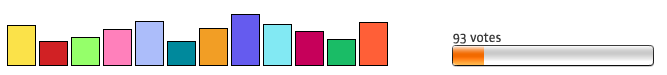
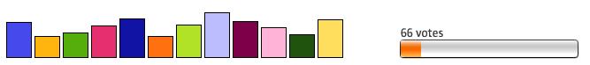
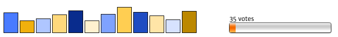
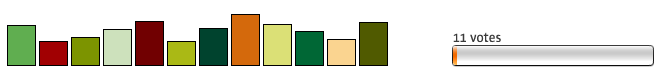
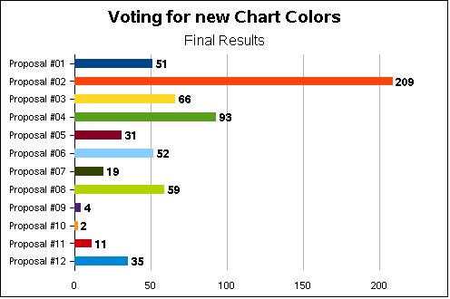

Visual
Design |
UI | Chart |
||||
| New default colors for Chart | ||||
 |
||||
| Thank you for your vote and your feedback – here are the results: | ||||
| Rank 1 | Proposal #02 | |||
|
Back to drafts of #02 color proposal and their examples | |||
| Rank 2 | Proposal #04 | |||
|  | ||||
|
Back to drafts of #04 color proposal and their examples | |||
| Rank 3 | Proposal #03 | |||
|  | ||||
|
Back to drafts of #03 color proposal and their examples | |||
| Rank 4 | Proposal #08 | |||
|
Back to drafts of #08 color proposal and their examples | |||
| Rank 5 | Proposal #06 | |||
|
Back to drafts of #06 color proposal and their examples | |||
| Rank 6 | Proposal #01 | |||
|
Back to drafts of #01 color proposal and their examples | |||
| Rank 7 | Proposal #12 | |||
|  | ||||
|
Back to drafts of #12 color proposal and their examples | |||
| Rank 8 | Proposal #05 | |||
|
Back to drafts of #05 color proposal and their examples | |||
| Rank 9 | Proposal #07 | |||
|
Back to drafts of #07 color proposal and their examples | |||
| Rank 10 | Proposal #11 | |||
|  | ||||
|
Back to drafts of #11 color proposal and their examples | |||
| Rank 11 | Proposal #09 | |||
|
Back to drafts of #09 color proposal and their examples | |||
| Rank 12 | Proposal #10 | |||
|
Back to drafts of #10 color proposal and their examples | |||
|
||||
| See the winning colors as Chart Type: | ||||
|  | ||||
Last
change:
11/18/2008
by sts